SRSH(r)
Max Saller
SRSH(r)
Anisotropic Screened Range-Separated Hybrids
Max Saller
RSH - Range Separated Hybrid DFT Functionals
\[
E_\mathrm{XC} =
\alpha E_\mathrm{HFx}^\mathrm{SR} +
\beta E_\mathrm{DFTx}^\mathrm{SR} +
(\alpha + \beta)E_\mathrm{HFx}^\mathrm{LR} +
E_\mathrm{DFTc}
\]
- $E_\mathrm{HFx}^\mathrm{SR}\,\,\rightarrow\,$"Exact" HF Exchange in the Short Range ($\alpha$ often chosen)
- $E_\mathrm{DFTx}^\mathrm{SR}\,\rightarrow\,$DFT Exchange in the Short Range ($\beta$)
- $E_\mathrm{HFx}^\mathrm{LR}\,\,\rightarrow\,$"Exact" HF Exchange in the Long Range ($\alpha+\beta\equiv 1$)
- $E_\mathrm{DFTc}\,\rightarrow\,$DFT Correlation
Range Separation - Long vs Short Range
\[
\frac{1}{r} = \frac{\alpha + \beta\,\mathrm{erf}(\omega r)}{r} +
\frac{1 - (\alpha + \beta\,\mathrm{erf}(\omega r))}{r}
\]
- $\omega\,\rightarrow\,$Range Separation Parameter
- Obtained via Optimal Tuning by Minimizing:
\[
J_\mathrm{OT} (\omega) = [E_\mathrm{HOMO}(\omega) + \mathrm{IP}(\omega)]^2 +
[E_\mathrm{LUMO}(\omega) + \mathrm{EA}(\omega)]^2
\]
SRSH - Screened RSH
- What about the Condensed Phase?
- We may not want 100% HF Exchange in the Long Range!
- "Screen" $E_\mathrm{HFx}^\mathrm{LR}\,\rightarrow\,$ include some Long Range DFT Exchange:
\[
E_\mathrm{XC} =
\alpha E_\mathrm{HFx}^\mathrm{SR} +
(1-\alpha) E_\mathrm{DFTx}^\mathrm{SR} +
(\alpha + \beta) E_\mathrm{HFx}^\mathrm{LR} +
(1-\alpha-\beta) E_\mathrm{DFTx}^\mathrm{LR} +
E_\mathrm{DFTc}
\]
- The amount of screening is determined by the solvent dielectric: $\,\alpha+\beta=\frac{1}{\textcolor{royalblue}{\varepsilon}}$
SRSH(r) - Anisotropic Dielectric Environments
- Consider two different Dielectric Environments: $\varepsilon_A \neq \varepsilon_B$
- Screen with $\varepsilon_A$ or $\varepsilon_B$ depending on position
\[
E_\mathrm{XC} =
\alpha E_\mathrm{HFx}^\mathrm{SR} +
(1-\alpha) E_\mathrm{DFTx}^\mathrm{SR} +
(\alpha + \beta) E_\mathrm{HFx}^\mathrm{LR} +
(1-\alpha-\beta) E_\mathrm{DFTx}^\mathrm{LR} +
E_\mathrm{DFTc}
\]
\[
E_\mathrm{XC} =
\alpha E_\mathrm{HFx}^\mathrm{SR} +
\left(\textcolor{royalblue}{\frac{1}{\varepsilon(r)}}-\alpha\right) E_\mathrm{DFTx}^\mathrm{SR} +
\textcolor{royalblue}{\frac{1}{\varepsilon(r)}} E_\mathrm{HFx}^\mathrm{LR} +
\left(1-\textcolor{royalblue}{\frac{1}{\varepsilon(r)}}\right) E_\mathrm{DFTx}^\mathrm{LR} +
E_\mathrm{DFTc}
\]
SRSH(r) - Anisotropic Dielectric Grid: PEQS
ANTH-TCNQ COMPLEX
ANTH-TCNQ COMPLEX
ANTH-TCNQ COMPLEX
$E^{\textrm{CT}}$ - CHARGE TRANSFER ENERGY
$$E^{\textrm{CT},\varepsilon}_\textrm{analytical} (r_\mathrm{DA}) = \left|E_\textrm{HOMO}^{D,\varepsilon} - E_\textrm{LUMO}^{A,\varepsilon}\right| - \frac{1}{\varepsilon\, r_\mathrm{DA}}$$
$$E^{\textrm{CT},\varepsilon_D\varepsilon_A}_\textrm{analytical} (r_\mathrm{DA}) = \left|E_\textrm{HOMO}^{D,\varepsilon_D} - E_\textrm{LUMO}^{A,\varepsilon_A}\right| - \frac{1}{\sqrt{\varepsilon_\mathrm{D}\varepsilon_\mathrm{A}}r_\mathrm{DA}}$$
$E^{\textrm{CT}}$ - CHARGE TRANSFER ENERGY
$$E^{\textrm{CT},\varepsilon}_\textrm{analytical} (r_\mathrm{DA}) = \textcolor{royalblue}{\left|E_\textrm{HOMO}^{D,\varepsilon} - E_\textrm{LUMO}^{A,\varepsilon}\right|} - \frac{1}{\varepsilon\, r_\mathrm{DA}}$$
$$E^{\textrm{CT},\varepsilon_D\varepsilon_A}_\textrm{analytical} (r_\mathrm{DA}) = \textcolor{royalblue}{\left|E_\textrm{HOMO}^{D,\varepsilon_D} - E_\textrm{LUMO}^{A,\varepsilon_A}\right|} - \frac{1}{\sqrt{\varepsilon_\mathrm{D}\varepsilon_\mathrm{A}}r_\mathrm{DA}}$$
$E^{\textrm{CT}}$ - CHARGE TRANSFER ENERGY
$$E^{\textrm{CT},\varepsilon}_\textrm{analytical} (r_\mathrm{DA}) = \left|E_\textrm{HOMO}^{D,\varepsilon} - E_\textrm{LUMO}^{A,\varepsilon}\right| - \textcolor{royalblue}{\frac{1}{\varepsilon\, r_\mathrm{DA}}}$$
$$E^{\textrm{CT},\varepsilon_D\varepsilon_A}_\textrm{analytical} (r_\mathrm{DA}) = \left|E_\textrm{HOMO}^{D,\varepsilon_D} - E_\textrm{LUMO}^{A,\varepsilon_A}\right| - \textcolor{royalblue}{\frac{1}{\sqrt{\varepsilon_\mathrm{D}\varepsilon_\mathrm{A}}r_\mathrm{DA}}}$$
$E^{1/\varepsilon r}$ - SCREENING COMPONENT
$$E^{1/\varepsilon r}_{\rm analytical} (r_{\rm DA})=-\frac{1}{\sqrt{\varepsilon_D \, \varepsilon_A}\, r_{DA}}$$
$$E^{1/\varepsilon r}_{\rm TDDFT} (r_{DA})=E^{{\rm CT},\varepsilon_D\varepsilon_A}_{\rm TDDFT}(r_{\rm DA}) - |E_{\rm HOMO}^{DA\varepsilon_D\varepsilon_A}(r_{DA})-E_{\rm LUMO}^{DA\varepsilon_D\varepsilon_A}(r_{DA})|$$
Typical Workflow
-
Isotropic ($\varepsilon$=3.6 and $\varepsilon$=4.7) ANTH-TCNQ calculations to compute:
- Charge transfer energy
- HOMO and LUMO energies
- PEQS grid for $\varepsilon$
-
Create anisotropic PEQS grid:
- In ANTH region, take gridpoints from $\varepsilon=\varepsilon_\mathrm{ANTH}=3.6$ grid
- In TCNQ region, take gridpoints from $\varepsilon=\varepsilon_\mathrm{TCNQ}=4.7$ grid
-
Anisotropic ANTH-TCNQ calculation (using "stitched" grid) to compute:
- Charge transfer energy
- HOMO and LUMO energies
Some Insights - Charge Transfer Energy
Some Insights - Screening Component
- Anisotropic $E^{1/\varepsilon r}$ converges to higher $\varepsilon$ isotropic value
Project Goals
Demonstrate SRSH(r) as the method of choice for anisotropic systems:
- Show trend in $E^\mathrm{CT}_\mathrm{TDDFT}$ with complex separation $r_\mathrm{DA}$
- Demonstrate $\lim\limits_{r_\mathrm{DA}\rightarrow \infty}E^\mathrm{CT}_\mathrm{TDDFT} = E^\mathrm{CT}_\mathrm{analytical}$
- Expand from ANTH-TCNQ bechmark to PS2 quinone pair